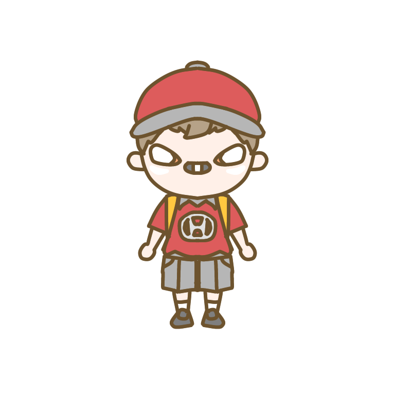

Do you like cars?
They are very cute!!
I'll tell you my three favorite cars. When you finish read this web page, you must like cars!
-
First, This car is PAJERO_MINI XR-Ⅱ.
My mother had the same car. She bought it in 1996. She love it. However, when she moved to Chiba with her family - my father, my sister, and me -, she sold it her husband's friend.
It was producted from 1994 to 1997. You'll still be able to sometimes see XR-Ⅱ now. For example, I saw the red one and the blue one in my hometown. It's excellent design and good collors. The best point of it is two cercle lights. They are very cute.
picture's URL : https://motor-fan.jp/catalog/MITSUBISHI/10402011/199610

-
Second, This car is Fit.
My father has a silver one. We are very hot in summer when we ride in it because the interior is black.
My favorite "Fit" was producted from 2001 to 2019. I don't like newest them.
I think newest cars are not so excellent design! I'm very sad... Following picture is its mark. The cercle on the "i" is very cute! "Fit" is very population car. You can see it everyday!!
picture's URL : https://autoc-one.jp/catalog/honda/fit/grade/#anchor
-
Third, This car is DBA-AK12 called "MARCH" in Japan
or "MICRA" in abroad.
My mother has a air blue one. We met it at noryo-sai in 2011.
It was producted from 2002 to 2010. You'll still be able to see DBA-AK12 now.
For example, I saw the red one and the silver one in Tsubata. Following video on YouTube is one of the commercial of the car.
The commercial is very nice!
We are told many nice points of the car for it - cute design, good size, and a nice consept. In addition, it is a very excellent commercial. I like it.
However, my mother's the car is out of order. It may throw away... If that were to become a reality, I would cry! I hope not.
-
I enjoy drawing some pictures of these cars' charactars.
Their looks are vdery cute! Which them do you like? PAJERO_MINI kun
 Fit kun
K12 kun
HUSTLAR kun
Lapin kun